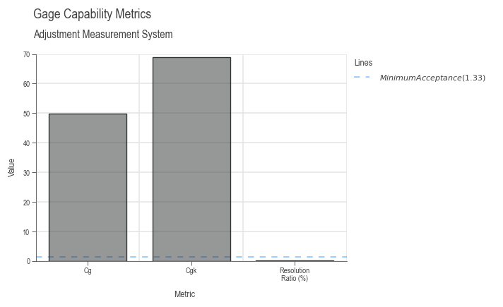
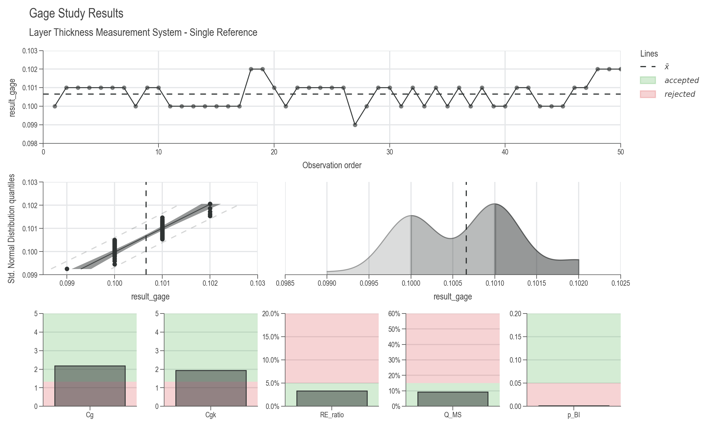
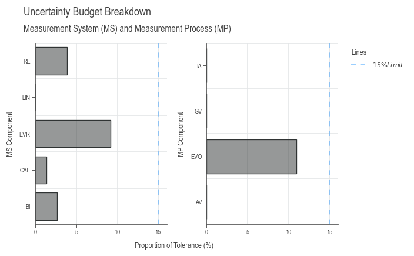
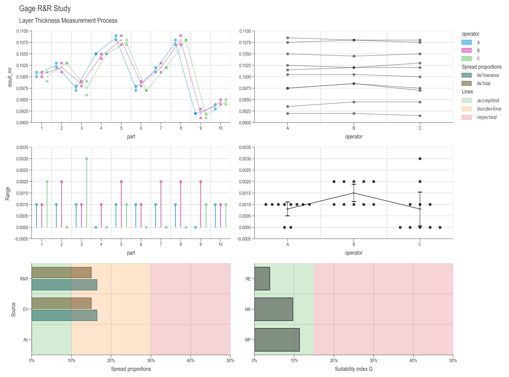
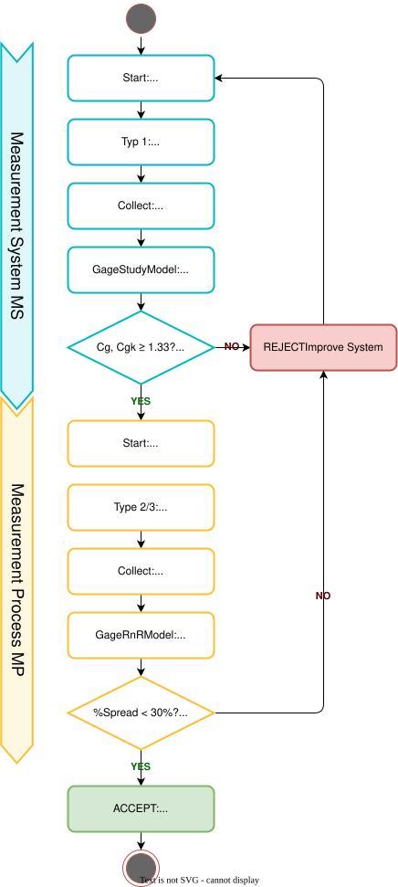

Gage R&R Guide
Introduction
Measurement System Analysis (MSA) is a critical component of quality management and process improvement. It provides methods to evaluate and quantify the variation in a measurement system, ensuring that your measurement process is capable and reliable before making decisions based on the data it produces.
This guide covers the complete workflow for gage analysis in DaSPi, including:
- Gage Study (MSA Type 1): Evaluates the measurement system itself using a single reference
- Gage R&R (MSA Type 2 & 3): Evaluates repeatability and reproducibility with multiple parts and operators
Why Measurement System Analysis Matters
Before analyzing process variation, you must ensure your measurement system is capable. A poor measurement system can lead to:
- Incorrect conclusions about process capability
- Wrong decisions about product conformance
- Wasted resources investigating "problems" that don't exist
- Failure to detect real quality issues
The golden rule: Measurement variation should be small compared to process variation and specification limits.
Standard Uncertainty Components
The following table shows the typical standard uncertainties as they affect measurements. They are divided into Measurement System (MS) and Measurement Process (MP). The individual standard uncertainty components can be determined using method A or B. The method B refers to prior knowledge or information from manuals or specifications and the method A refers to statistical analysis.
| Shortcut | Uncertainty Component | Impact | Method |
|---|---|---|---|
CAL |
Calibration of the reference | MS | B |
RE |
Display resolution | MS | B |
BI |
Bias | MS | A/B |
LIN |
Linearity deviation | MS | A/B |
EVR |
Equipment Variation (repeatability) on the reference | MS | A |
MPE |
Maximum Permissible Error (error limit) | MS | B |
EVO |
Equipment Variation (repeatability) on the object | MP | A |
AV |
Appraiser Variation (comparability of operators) | MP | A |
GV |
Gage Variation (comparability of measurement system) | MP | A |
IA |
Interactions | MP | A |
T |
Temperature | MP | A/B |
STAB |
Stability over time | MP | A |
OBJ |
Inhomogeneity of the object | MP | A/B |
REST |
Other uncertainties not covered by the above | MS/MP | B |
MSA Type 1: Gage Study
Overview
A Gage Study (MSA Type 1) evaluates the measurement system using repeated measurements of one or more reference standards. This is the foundation for understanding your measurement system's basic performance.
When to Use
- Qualifying a new measurement system
- Verifying measurement system performance over time
- Determining measurement uncertainty for a single gage
- Checking for bias and linearity across the measurement range
Quick Start Example
import daspi as dsp
# Load example data
df = dsp.load_dataset('grnr_adjustment')
# Create a GageEstimator for a single reference
gage = dsp.GageEstimator(
samples=df['result_gage'],
reference=df['reference'][0], # True reference value
u_cal=df['U_cal'][0], # Calibration uncertainty
tolerance=df['tolerance'][0], # Specification tolerance
resolution=df['resolution'][0] # Gage resolution
)
# View the results
print(gage.describe())
Understanding the Output
The GageEstimator provides several key metrics:
import daspi as dsp
df = dsp.load_dataset('grnr_adjustment')
gage = dsp.GageEstimator(
samples=df['result_gage'],
reference=df['reference'][0],
u_cal=df['U_cal'][0],
tolerance=df['tolerance'][0],
resolution=df['resolution'][0]
)
print(gage.describe())
| result_gage | |
|---|---|
| n_samples | 60.00000 |
| n_missing | 6.00000 |
| n_outlier | 0.00000 |
| min | 1.00070 |
| max | 1.00160 |
| R | 0.00090 |
| mean | 1.00081 |
| median | 1.00080 |
| std | 0.00013 |
| sem | 0.00002 |
| p_ad | 9.866e-20 |
| lower | 0.98700 |
| upper | 1.01300 |
| cg | 49.73226 |
| cgk | 68.99967 |
| bias | 0.00081 |
| p_bias | 3.723e-44 |
| T_min_cg | 0.00235 |
| T_min_cgk | 0.01044 |
| T_min_res | 0.00200 |
| resolution_ratio | 0.00077 |
Metrics explained:
n_samples: Number of measurements takenmean: Average of all measurementsstd: Standard deviation (repeatability)bias: Difference between mean and reference (mean - reference)p_bias: Statistical significance of bias (p-value)Cg: Capability index for variation (similar to Cp)Cgk: Capability index considering bias (similar to Cpk)resolution_ratio: Resolution as proportion of tolerance
Acceptance Criteria (typical values):
- Cg, Cgk ≥ 1.33: Measurement system is acceptable
- 1.00 ≤ Cg, Cgk < 1.33: Marginal, may be acceptable depending on application
- Cg, Cgk < 1.00: Unacceptable, measurement system needs improvement
- resolution_ratio < 0.05: Resolution is adequate (5% rule)

Multiple Reference Standards (Linearity Check)
To evaluate linearity across the measurement range, use multiple reference standards:
import daspi as dsp
# Load data with multiple reference parts
df = dsp.load_dataset('grnr_layer_thickness')
# Create GageStudyModel with linearity evaluation
gage = dsp.GageStudyModel(
source=df,
target='result_gage',
reference='reference',
u_cal=df['U_cal'][0],
tolerance=df['tolerance'][0],
resolution=df['resolution'][0],
bias_corrected=False # Include bias in uncertainty
)
# Create visualization
chart = dsp.GageStudyCharts(
gage,
stretch_figsize=1.5
).plot().stripes().label()
# Display model summary
gage
What gets calculated:
- Individual bias for each reference level
- Linearity uncertainty (
u_lin) - Combined measurement system uncertainty
- Capability indices for each reference
The output tables include:
References Analysis:
| Ref | mean | Bias | s | R | |
|---|---|---|---|---|---|
| 1 | 0.101000 | 0.100660 | -0.000340 | 0.000688 | 0.003000 |
Gage capability:
| Value | Limit | Capable | T_min | |
|---|---|---|---|---|
| Cg | 2.179005 | 1.330000 | True | 0.018311 |
| Cgk | 1.932051 | 1.330000 | True | 0.021711 |
| RE_ratio | 0.033333 | 0.050000 | True | 0.020000 |
| Q_MS | 0.096371 | 0.150000 | True | 0.019274 |
| p_BI | 0.001024 | 0.050000 | False | nan |
Measurement uncertainty budget measuring process:
| u | U | Q | rank | |
|---|---|---|---|---|
| CAL | 0.000100 | 0.000200 | 0.013333 | 4.000000 |
| RE | 0.000289 | 0.000577 | 0.038490 | 2.000000 |
| BI | 0.000196 | 0.000393 | 0.026173 | 3.000000 |
| LIN | 0.000000 | 0.000000 | 0.000000 | nan |
| EVR | 0.000688 | 0.001377 | 0.091785 | 1.000000 |
| REST | 0.000000 | 0.000000 | 0.000000 | nan |
| MS | 0.000723 | 0.001446 | 0.096371 | nan |

Visualizing Gage Study Results
The GageStudyCharts class creates a comprehensive dashboard with:
- Measurements by Reference: Shows variation at each reference level
- Probability Plot: Checks normality of measurement errors
- Distribution: Shows the shape of the measurement distribution
- Capability Indices: Bar charts showing Cg, Cgk, resolution ratio, etc.
# Customize the chart appearance
chart = dsp.GageStudyCharts(gage, stretch_figsize=1.5)
chart.plot() # Create all plots
chart.stripes() # Add reference lines and zones
chart.label( # Add labels and titles
fig_title='Gage Study Results',
sub_title='Layer Thickness Measurement System'
)
# chart.save('gage_study_results.png') # Optionally save
Working with Measurement Uncertainty
The GageStudyModel calculates a complete uncertainty budget:
# Access individual uncertainty components
print(f"Calibration uncertainty (u_cal): {gage.u_cal.expanded:.6f}")
print(f"Resolution uncertainty (u_re): {gage.u_re.expanded:.6f}")
print(f"Bias uncertainty (u_bi): {gage.u_bi.expanded:.6f}")
print(f"Linearity uncertainty (u_lin): {gage.u_lin.expanded:.6f}")
print(f"Repeatability uncertainty (u_evr): {gage.u_evr.expanded:.6f}")
# Combined measurement system uncertainty
print(f"\nCombined MS uncertainty: {gage.u_ms.expanded:.6f}")
# Check if measurement system is capable
print(f"Q_MS ratio: {gage.u_ms.expanded / gage.tolerance * 2:.4f}")
print(f"Acceptable if Q_MS < {gage.q_ms_limit}")
The Q_MS ratio indicates the proportion of tolerance consumed by measurement uncertainty. A typical limit is 0.15 (15%), meaning measurement uncertainty should not exceed 15% of the tolerance.
Coverage Factor (k)
The coverage factor determines the confidence level of the uncertainty:
- k = 2: ~95% confidence interval (default)
- k = 3: ~99.7% confidence interval
MSA Type 2 & 3: Gage R&R Study
Overview
Gage R&R (Repeatability and Reproducibility) extends the gage study to evaluate variation across multiple parts, operators, and/or measurement systems. This provides a comprehensive view of measurement process variation.
- Repeatability (EV): Variation when the same operator measures the same part multiple times
- Reproducibility (AV or GV): Variation between different operators or measurement systems
- Interactions: Part-operator interactions that affect measurements
When to Use
- MSA Type 2: Multiple operators measure multiple parts (evaluates operator variation)
- MSA Type 3: Multiple measurement conditions without operator influence (e.g., different fixtures, locations, temperatures)
Complete Gage R&R Example
import daspi as dsp
# Load dataset
df = dsp.load_dataset('grnr_layer_thickness')
# Step 1: Create the Gage Study (MSA Type 1)
gage = dsp.GageStudyModel(
source=df,
target='result_gage',
reference='reference',
u_cal=df['U_cal'][0],
tolerance=df['tolerance'][0],
resolution=df['resolution'][0]
)
# Step 2: Create the Gage R&R Model
model = dsp.GageRnRModel(
source=df,
target='result_rnr',
part='part', # Column identifying different parts
gage=gage, # GageStudyModel from Step 1
u_av='operator' # Column identifying operators (Type 2)
# u_gv='fixture' # Use this instead for Type 3
)
# Step 3: Visualize Results
chart = dsp.GageRnRCharts(
model,
stretch_figsize=True
).plot().stripes().label()
# Step 4: Review the model
model # Displays comprehensive uncertainty budget
Understanding Gage R&R Output
The GageRnRModel provides several tables:
1. ANOVA Table
Shows the statistical analysis of variance sources:
Example output:
| Typ-I | DF | SS | MS | F | p | n2 |
|---|---|---|---|---|---|---|
| Source | ||||||
| part | 9 | 0.001588 | 0.000176 | 261.907904 | 0.000000 | 0.979539 |
| operator | 2 | 0.000001 | 0.000000 | 0.618557 | 0.542960 | 0.000514 |
| Residual | 48 | 0.000032 | 0.000001 | nan | nan | 0.019947 |
Key sources of variation:
- Part: Variation between different parts (desired variation)
- Operator: Variation due to operators/systems
- Part×Operator: Interaction effects
- Residual: Repeatability (pure measurement variation)
Columns explained:
- DF: Degrees of freedom
- SS: Sum of squares
- MS: Mean squares
- F: F-statistic
- p: p-value for significance
- n2: Proportion of total variance explained
2. Gage R&R Table
Shows the variance components breakdown:
Repeatability and reproducibility (R&R):
| MS | MS/Total | s | 6s | 6s/Total | 6s/Tolerance | |
|---|---|---|---|---|---|---|
| R&R | 0.000001 | 0.022480 | 0.000821 | 0.004924 | 0.149932 | 0.164148 |
| EV | 0.000001 | 0.022480 | 0.000821 | 0.004924 | 0.149932 | 0.164148 |
| AV | 0.000000 | 0.000000 | 0.000000 | 0.000000 | 0.000000 | 0.000000 |
| PV | 0.000029 | 0.977520 | 0.005412 | 0.032473 | 0.988696 | 1.082437 |
| Total | 0.000030 | 1.000000 | 0.005474 | 0.032844 | 1.000000 | 1.094812 |
Interpretation:
- R&R < 10%: Excellent
- 10% ≤ R&R < 30%: Acceptable
- R&R ≥ 30%: Unacceptable
- PV should dominate the variation
- EV should be small compared to PV
- AV should be minimal or zero if operators are consistent
Columns explained:
- MS: Mean square from ANOVA
- MS/Total: Proportion of total variance
- s: Standard deviation for each source
- 6s: Six times the standard deviation (approximate range)
- 6s/Total: Proportion of total variation
- 6s/Tolerance: Proportion of tolerance consumed by each source
3. Uncertainty Budget
Provides a complete breakdown of all uncertainty components:
Measurement uncertainty budget:
| u | U | Q | rank | |
|---|---|---|---|---|
| CAL | 0.000100 | 0.000200 | 0.013333 | 5.0 |
| RE | 0.000289 | 0.000577 | 0.038490 | 3.0 |
| BI | 0.000196 | 0.000393 | 0.026173 | 4.0 |
| LIN | 0.000000 | 0.000000 | 0.000000 | NaN |
| EVR | 0.000688 | 0.001377 | 0.091785 | 2.0 |
| MS_REST | 0.000000 | 0.000000 | 0.000000 | NaN |
| MS | 0.000723 | 0.001446 | 0.096371 | NaN |
| EVO | 0.000821 | 0.001641 | 0.109432 | 1.0 |
| AV | 0.000000 | 0.000000 | 0.000000 | NaN |
| GV | 0.000000 | 0.000000 | 0.000000 | NaN |
| IA | 0.000000 | 0.000000 | 0.000000 | NaN |
| T | 0.000000 | 0.000000 | 0.000000 | NaN |
| STAB | 0.000000 | 0.000000 | 0.000000 | NaN |
| OBJ | 0.000000 | 0.000000 | 0.000000 | NaN |
| MP_REST | 0.000000 | 0.000000 | 0.000000 | NaN |
| MP | 0.000850 | 0.001700 | 0.113305 | NaN |
- Measurement System (MS): CAL, RE, BI, LIN, EVR, REST
- Measurement Process (MP): EVO, AV, GV, IA, T, STAB, OBJ, REST
Each component shows:
- Standard uncertainty (u)
- Expanded uncertainty (U) at coverage factor k
- Proportion (Q) relative to tolerance
- Rank: Importance of each component

Customizing Gage R&R Analysis
Bias Correction
If you identify and correct for bias, set bias_corrected=True:
gage = dsp.GageStudyModel(
source=df,
target='result_gage',
reference='reference',
u_cal=df['U_cal'][0],
tolerance=df['tolerance'][0],
resolution=df['resolution'][0],
bias_corrected=True # Bias is corrected, don't include in uncertainty
)
Additional Uncertainty Sources
Include temperature, stability, or object inhomogeneity:
# Method A: From data (categorical column)
model = dsp.GageRnRModel(
source=df,
target='result_rnr',
part='part',
gage=gage,
u_av='operator',
u_t='temperature', # Temperature effect from data
u_stab='time_period', # Stability over time from data
u_obj='location' # Object inhomogeneity from data
)
# Method B: From prior knowledge
from daspi.statistics.confidence import MeasurementUncertainty
u_temp = MeasurementUncertainty(
error_limit=0.005, # ±0.005 variation due to temperature
distribution='rectangular',
k=2
)
model = dsp.GageRnRModel(
source=df,
target='result_rnr',
part='part',
gage=gage,
u_av='operator',
u_t=u_temp # Known temperature uncertainty
)
Visualizing Gage R&R Results
The GageRnRCharts creates six diagnostic plots:
- Measurement by Part (by Operator): Shows part-to-part variation
- Measurement by Operator: Shows operator consistency across parts
- Range by Part: Shows within-part repeatability
- Range by Operator: Shows operator repeatability
- Variance Components (%Spread and %Tol): Bar chart comparing sources
- Uncertainty Budget: Shows MS, MP, and total measurement uncertainty
chart = dsp.GageRnRCharts(
model,
spread_accepted_limit=0.1, # 10% threshold for acceptance
spread_rejected_limit=0.3, # 30% threshold for rejection
u_accepted_limit=0.15, # 15% uncertainty threshold
stretch_figsize=True
)
chart.plot()
chart.stripes() # Adds acceptance zones
chart.label(
fig_title='Gage R&R Study',
sub_title='Layer Thickness Measurement Process'
)
# chart.save('docs/img/gage_rnr_layer_thickness.png')

Practical Workflow
Step-by-Step Process

1. Define Your Measurement System
- Identify the gage/instrument
- Determine specification limits
- Know calibration uncertainty
- Understand resolution
2. Collect Data
For Gage Study (Type 1): - Measure reference standard(s) multiple times (≥ 25-50 measurements) - Use multiple references across the measurement range for linearity
For Gage R&R (Type 2): - Select representative parts (≥ 10 parts spanning the range) - Have multiple operators (≥ 2-3 operators) - Each operator measures each part multiple times (≥ 2-3 trials) - Randomize measurement order
3. Analyze with DaSPi
# Type 1: Gage Study
gage = dsp.GageStudyModel(source, target, reference, ...)
# Type 2/3: Gage R&R
model = dsp.GageRnRModel(source, target, part, gage, u_av, ...)
4. Interpret Results
Check acceptance criteria: - Cg, Cgk ≥ 1.33 - %Spread < 10% (excellent) or < 30% (acceptable) - Q_MS < 0.15 (measurement uncertainty < 15% of tolerance)
5. Take Action
If measurement system is unacceptable: - Improve resolution (better gage) - Reduce bias (calibration, correction) - Improve repeatability (better fixturing, procedure) - Reduce operator variation (training, standardization) - Control environmental factors (temperature, vibration)
Data Requirements
Gage Study Dataset Structure
# Columns needed for GageStudyModel:
# - target: measurement results (e.g., 'result_gage')
# - reference: reference value for each measurement
# - Additional: tolerance, resolution, calibration uncertainty (can be constants)
Example:
result_gage reference tolerance resolution U_cal
0 0.1000 0.101 0.03 0.001 0.0002
1 0.1010 0.101 NaN NaN NaN
2 0.1010 0.101 NaN NaN NaN
...
Gage R&R Dataset Structure
# Columns needed for GageRnRModel:
# - target: measurement results (e.g., 'result_rnr')
# - part: part identifier
# - operator: operator identifier (Type 2) OR
# - other categorical columns for Type 3 (fixture, location, etc.)
Example:
Common Use Cases
Use Case 1: New Measurement System Qualification
# Collect 50 measurements on a single reference
df = collect_gage_data(reference_value=10.0, n_measurements=50)
gage = dsp.GageEstimator(
samples=df['measurement'],
reference=10.0,
u_cal=0.002,
tolerance=0.1,
resolution=0.001
)
# Check if acceptable
if gage.cg >= 1.33 and gage.cgk >= 1.33:
print("Measurement system is qualified!")
else:
print("Measurement system needs improvement")
Use Case 2: Periodic Verification
# Check gage performance quarterly
df = dsp.load_dataset('grnr_adjustment')
gage = dsp.GageEstimator(
samples=df['result_gage'],
reference=df['reference'][0],
u_cal=df['U_cal'][0],
tolerance=df['tolerance'][0],
resolution=df['resolution'][0]
)
# Compare to historical baseline
if gage.std > historical_std * 1.2:
print("WARNING: Repeatability has degraded")
Use Case 3: Operator Training Effectiveness
# Evaluate operators before and after training
model_before = dsp.GageRnRModel(df_before, 'measurement', 'part', gage, u_av='operator')
model_after = dsp.GageRnRModel(df_after, 'measurement', 'part', gage, u_av='operator')
av_before = model_before.u_av.expanded
av_after = model_after.u_av.expanded
improvement = (av_before - av_after) / av_before * 100
print(f"Operator variation reduced by {improvement:.1f}%")
Tips and Best Practices
Data Collection
- Randomize: Always randomize the order of measurements to avoid systematic effects
- Blind Studies: Operators should not know which part they're measuring
- Representative Parts: Select parts that span the full measurement range
- Environment: Control temperature, humidity, and other environmental factors
- Sample Size: Minimum 2 operators × 10 parts × 2 trials = 40 measurements
Analysis
- Check Normality: Use probability plots to verify normal distribution assumptions
- Review Residuals: Check for patterns that might indicate unmodeled effects
- Interaction Effects: If significant, investigate root causes
- Outliers: Investigate and document any outliers before removing them
Reporting
- Document Everything: Gage ID, calibration status, operators, environmental conditions
- Visual Evidence: Include charts in reports (use
chart.save()) - Acceptance Criteria: Clearly state and justify your acceptance limits
- Action Plans: If unacceptable, document improvement plans
Troubleshooting
Problem: High Bias
Symptoms: Large difference between mean and reference, low Cgk
Solutions: - Calibrate the measurement system - Check for systematic errors (fixture alignment, probe wear) - Apply bias correction in software
Problem: High Repeatability Variation
Symptoms: Large std, low Cg
Solutions: - Improve fixturing/clamping - Standardize measurement procedure - Control environmental factors - Consider higher-resolution gage
Problem: High Reproducibility
Symptoms: Large AV or GV component in R&R
Solutions: - Operator training and standardization - Improve measurement procedure documentation - Use fixtures/jigs to reduce operator influence - Automate measurements if possible
Problem: Significant Interactions
Symptoms: Large IA component, part×operator interaction significant
Solutions: - Investigate which parts cause problems for which operators - Check if certain parts require special handling - Review operator technique for consistency
API Reference
For detailed documentation of all classes and methods:
References
-
VDA Band 5 (Juli 2021). Mess- und Prüfprozesse. Eignung, Planung und Management. 3. überarbeitete Auflage
-
Measurement Systems Analysis Reference Manual, 4th Edition (2010). Automotive Industry Action Group (AIAG)
-
Dr. Bill McNeese, BPI Consulting, LLC (09.2012). ANOVA Gage R&R Part 1
-
Curt Ronniger. Software für Statistik, Schulungen und Consulting. Mess-System-Analyse
-
Minitab, LLC (2025). Gage Study Methods and Formulas